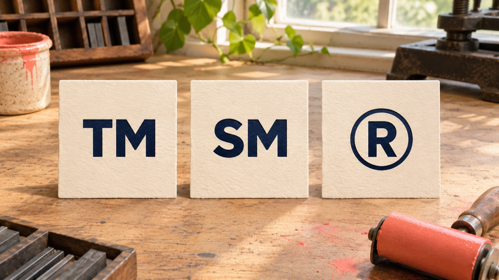

You’ve probably noticed the small symbols appearing beside business names, logos, and product brands: ™, SM, and ®.
They look similar, but they communicate different things about a trademark.
Some indicate that a business claims trademark rights, while another signifies that a mark has been federally registered with the United States Patent and Trademark Office (USPTO).
Understanding the distinction is particularly useful for businesses developing new brands or pursuing federal trademark registration.
What Do the Trademark Symbols Mean?
The three symbols serve different purposes.
| Symbol | Meaning | Federal registration required? |
|---|---|---|
| ™ | Trademark claim, commonly associated with goods | No |
| ℠ | Service mark claim associated with services | No |
| ® | Federally registered trademark or service mark | Yes |
The principal distinction is that ™ and ℠ may be used without federal registration, while the federal registration symbol ® requires an existing USPTO registration.
What Does ™ Mean?
The ™ symbol stands for trademark.
Businesses commonly use it to indicate that they claim trademark rights in a name, logo, slogan, or other designation associated with their goods.
For example, a company selling bottled beverages under the name NORTHLINE might display its brand as NORTHLINE™.
Using ™ does not require filing an application with the USPTO or obtaining government approval.
It also does not necessarily mean that the business possesses enforceable trademark rights.
In the United States, trademark rights generally arise through qualifying use of a distinctive mark in connection with goods or services. Placing ™ beside a name does not independently establish that use or resolve potential conflicts with earlier trademarks.
The symbol communicates a claim of rights, rather than confirming that the claim is legally valid.
What Does SM Mean?
The SM symbol, often displayed as ℠, stands for service mark.
It serves essentially the same purpose as ™, but specifically identifies a mark associated with services rather than goods.
For example, a consulting business operating under the name NORTHLINE might display NORTHLINE℠ in connection with its consulting services.
Like ™, the ℠ symbol does not require federal registration.
The distinction between goods and services is relevant because trademark law recognizes both trademarks used for products and service marks used for activities performed for customers.
For example, downloadable software is generally classified as a good, while software as a service (SaaS) is generally classified as a service.
In practice, businesses sometimes use ™ for services as well. The distinction between ™ and ℠ is therefore primarily one of convention, rather than a requirement that the symbols be used exclusively for goods and services, respectively.
Neither symbol independently establishes trademark ownership.
What Does ® Mean?
The ® symbol indicates that a trademark or service mark has been registered with the USPTO.
Unlike ™ and ℠, the federal registration symbol cannot be used merely because a business claims trademark rights or has submitted an application.
A pending trademark application does not authorize use of ®.
Neither does approval for publication in the Trademark Official Gazette or issuance of a Notice of Allowance.
Under U.S. federal trademark law, the symbol becomes appropriate once the trademark has actually been registered with the USPTO.
A state trademark registration, by itself, does not authorize use of the federal registration symbol.
The ® symbol communicates a specific legal status, rather than simply indicating that a business considers its brand protected.
Can a Business Use ® for Every Product It Sells?
Not necessarily.
The USPTO limits use of the federal registration symbol to the goods or services identified in the relevant registration.
Consider TempoGarden, a hypothetical company offering productivity software.
Suppose TempoGarden obtains a federal registration for its name in connection with its online SaaS platform.
The company also develops a downloadable mobile application, but that product is not covered by the registration.
The existing registration would not automatically authorize use of ® in connection with the downloadable application merely because both offerings use the TempoGarden name.
The relevant distinction concerns the particular goods or services covered by the registration.
For more information, see What Is a Trademark Class, and How Many Do I Need?
Do You Have to Use a Trademark Symbol?
No. Federal trademark law generally does not require businesses to display ™, ℠, or ® whenever they use their marks.
A business may possess enforceable trademark rights without displaying a symbol.
However, federal law provides a particular benefit for giving notice of registration.
Under Section 29 of the Lanham Act, 15 U.S.C. § 1111, a federal registrant may provide notice by displaying ® or certain prescribed registration statements with its mark.
If a registrant fails to provide the statutory notice, it generally cannot recover profits or damages in a federal trademark infringement action unless the defendant had actual notice of the registration.
Accordingly, the registration symbol has a legal significance beyond simply communicating that a trademark is registered.
The USPTO does not prescribe an exact location for the symbol. Businesses commonly place it in superscript or subscript immediately beside the mark.
What Happens If Someone Uses ® Without Federal Registration?
Improperly displaying ® can create legal issues because the symbol represents that a mark has been federally registered.
For example, a business with a pending trademark application cannot properly use ® merely because it expects registration to issue.
However, improper use does not automatically constitute fraud.
The USPTO distinguishes mistakes or misunderstandings from deliberate misuse intended to deceive or mislead the public or the agency.
The consequences depend on the circumstances, including the mark’s registration status, the goods or services involved, and whether the improper use was intentional.
An attorney evaluating the issue may also consider whether the symbol appears in evidence submitted with a pending trademark application.
The Bottom Line
The symbols ™, ℠, and ® communicate different information about trademarks.
The ™ and ℠ symbols indicate claimed trademark rights, commonly associated with goods and services, respectively. Neither requires federal registration.
The ® symbol signifies federal registration and is limited to use with the mark in connection with the goods or services covered by that registration.
Although trademark symbols help communicate a claim of rights or provide notice of registration, they do not independently create trademark ownership or determine the scope of legal protection.
This article provides general educational information about U.S. trademark law. It does not constitute legal advice or establish an attorney-client relationship. The appropriate use and legal significance of trademark symbols depend on the circumstances and applicable law.